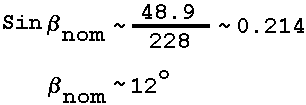

La plupart des milliers de rapports existants de phénomènes ovnis sont de piêtres sources d'information. Ils ne contiennent que peu ou pas de données, sont des signalements de canulars, ou sont le résultat d'erreurs d'identification d'objets familiers. Seul un très petit pourcentage de ces rapports fournit des informations concrètes à partir desquelles quelques inférences peuvent être dégagées.
Le besoin d'observation instrumentée de phénomènes ovni vient du fait que les sens non assistés d'un observateur ne sont pas des engistreurs fiables de donnée scientifique. Egalement, la capacité d'une observateur à fournit une information utile est affectée par son entraînement, son état d'esprit au moment de l'observation, et sa suggestibilité, tous pendant et après l'événement. La précision nécessite des instruments pour mesurer précisément des données tels que des angles, vitesses apparentes ou réelles, distance, couleur, et luminance.
Même un observateur avec un entraînement optimal, un état d'esprit objectif, et une suggestibilité minimal reçoit une forte pression lorsqu'il n'est pas assisté par des instruments, pour fournir une information scientifique utile. C'est particulièrement vrai dans le cas des phénomènes onvis, qui sont typiquement de courte durée, interviennent dans un environnement non familier, et manquent de points de référence à partir desquels des inférences raisonnables comme la distance, la taille, et la vitesse peuvent être dégagées.
Même lorsque des instruments lui sont accessibles, l'observateur et l'analyste de son rapport doivent être conscient d'un processus inhérent dans toute investigation scientifique ; à savoir, la tendance de l'enquêteur à rechercher des éléments pour soutenir ou invalider une hypothèse donnée. Dans cet état d'esprit, l'enquêteur tend à écarter toutes les données de ses instruments qui ne sont pas en accord avec son but prédéterminé. Un contrôleur de traffic aérien, par exemple, se concentre sur les échos radar dont il considère assez certainement qu'ils sont ceux provenant de ces appareils dont il est responsable. Un météorologue focalise son attention sur des données plutôt différentes de l'écran radar : orage, tornade, et activité frontale. L'observateur militaire prête moins d'attention aux phénomènes naturels et se concentre sur les données sur l'écran qui pourraient signifier l'approche de corps ballistiques ou orbitants.
En d'autres mots, presque tous les processus investigatifs débutent avec un "filtre" inhérent conçu pour minimiser tout ce qui, pour l'enquêteur concerné, constitue du "bruit." Mais le bruit de l'un est fréquemment les données d'un autre. Le physicien intéressé par the elastic scattering cross-section of pi-mesons interagissant avec des protons commence son analyse en définissant les critères tendant à éliminer tous les événements inélastiques.
Le processus de filtrage se révéla être à l'oeuvre lorsque les chercheurs en physique atmosphérique examinèrent the read-out d'un photomètre scanning, un instrument normalement utilisé dans les études de airglow. L'appareil scans un secteur du ciel et enregistre le résultat sous forme de trace sur une bande de papier. La lumière zodiaque et la Voie Lactée apparaissent comme des broad humps ; les étoiles et planètes comme des pics aigüs. Un ovni apparaîtrait aussi comme un pic, mais son mouvement amènerait le pic à apparaître en différentes parties du ciel dans des scans successifs.
L'opérateur du scanner remarquerait-il une telle trace ? Ou l'ignorerait-il, tout comme le "bruit" des étoiles et planètes ? Son attention étant focalisée sur les traces indiquant des airglow, il semble probable qu'il ne remarquerait aucune trace attributable à un ovni.
Cela se révéla être le cas. L'examen par les enquêteurs du projet d'un read-out de photomètre de lumière zodiacale effectué à l'époque d'une observation visuelle révéla 4 pics dans des scans successifs qui ne pouvaient pas être attribués à des étoiles ou planètes. Le personnel analysant les données les avait ignorées. Une reconstruction géometrique de la trajectoire de l'objet établit que le photomètre avait enregistré un missile ballistique en trajectoire au-dessus de l'Océan Pacifique. Des détails peuvent être trouvés en section 8 de ce chapitre, "Haleakala II."
Mais même si l'operateur d'un instrument ne remarque pas ce qui, pour lui, est du bruit, un autre opérateur employant le même appareil dans un but différent a accès à l'ensemble des données enregistrées et peut par conséquent recherche l'information spécifique qui l'intéresse. Comme cela a été démontré dans le cas du photomètre scannant, l'instrument peut être employé pour fournir l'enregistrement d'un ovni qui puisse par la suite être soumis à une analyse scientifique. Tous les instruments existants, cependant, n'ont pas la puissance de résolution adéquate ou d'autres caractéristiques de conception pour des recherches efficaces de phénomènes ovnis.
Des études futures de phénomènes ovnis devraient, de mon jugement, être basées sur l'information recueillie par des instruments adaptés. Ce chapitre discutera des instruments existants et des systèmes d'instruments avec une référence spéciale à leur adéquation à une recherche d'ovnis. Il suggérera également quels instruments et systèmes d'instruments pourraient être conçus qui apporteraient plus facilement des données adaptées à l'études des phénomènes ovnis.
L'appareil photo plein-ciel fut développé pour que des enregistrements photographiques permanents des moments d'occurrence, intensité et lieu d'apparition de lueurs boréales puissent êre faits automatiquement. Lors de l'IGY (1957-1958) 114 caméras plein-ciel étaient en opération sur des sites près des pôles Nord et Sud.
Les appareils photos sont conçus pour photographier près de 160 ° du ciel et enregistrer les distances angulaires depuis le zénith au moyen de lumières. Des détecteurs photosensibles mettent les appareils en route pendant l'obscurité et les désactivent quand il fait jour. Les expositions sont courtes et peuvent être fixées à toute valeur souhaitée. Le temps local et universel et la durée d'exposition sont enregistrés sur chaque image. Le tableau 1 liste les points saillants des appareils photos de plusieurs pays participants. Pour plus de détails voir : Annales (1962) Gartlein (1947).
Le film est examiné par un personnel formé et les données sur la position et luminosité boréale dans chacune des 3 zones, comme fonction du temps, sont entrées selon un format de 5 lignes appelé "ascaplot". Les 3 zones sont celles du Nord, zenith et Sud. Les zones Nord et Sud couvrent les régions entre 600 et 800 du zenith, et la zone de zenith inclut l'ensemble du ciel entre 600 et le zenith.
| Pays | Largeur de film en mm | Nombre d'expositions/h | Exposition en secondes | Type de film | Précision de temps |
|---|---|---|---|---|---|
| USA | 16 | 60-80 alternant | 10-20, 15, 48 | Eastman Kodak Tri-x, Ilford HP-3 | ±10 s à ±2 mn |
| Canada | 35 | 60 | 4-40 alternant | Eastman Kodak Tri-x Pan. | ±3 s à ±1 mn |
| Canada | 16 | 60 | 30 | Eastman Kodak Tri-x Neg. | ± 1 mn |
| URSS | 35 | 12, 60, 120, 180 alternant | 5, 10, 20 alternant | High sensitivity Negative Pan. | ± 2,5 s |
| Japon | 16 | 240 | 13 | High sensitivity Pan. | ± 0,3 mn |
| Argentine | 16 | 60, 48 | 20 | Eastman Kodak Tri-x | ± 1 mn |
A une altitude de 100 km ; la plus basse altitude où les aurores existent généralement, la caméra couvre une région d'environ 30 de latitude.
La plupart des caméras enregistrent sur du film 16 mm, et le diamètre de l'image circulaire du ciel est d'environ 10 mm. Les grains d'argent individuels dans l'émulsion étant de l'ordre de 1 µ (0,001 mm) de diamètre, une image inférieure à 20 µ a une résolution très pauvre. Pour produire une image de 20 µ, un objet à 100 km de distance devrait ne pas avoir un diamètre inférieur à 600 m. Il est apparent que la résolution d'un tel instrument n'est pas adéquate pour les objets de dimensions plus terrestrement communes.
La sensibilité de la caméra plein ciel est également tristement faible dans des buts de recherche d'ovnis. Par
exemple, faisant référence aux sources ponctuelles, le Dr. Gerald M. Rothberg, dans son rapport sur l'observation
d'1 mois avec une de ces caméras, indique que 5 miles est grossièrement la distance maximale à laquelle nous
pouvons détecter les feux d'atterrissage d'avions de ligne commerciaux, comme cela a été déterminé à partir de
photographies d'avions...
La couverture du ciel par ces instruments est très bonne, cependant, totalisant près de 83 % d'un hémisphère du même rayon. Cependant, chaque caméra ne peut échantillonner que 0,2 % environ du volume du ciel à 100 km de haut au-dessus des Etats-Unis continentaux, qui totalisent près de 9x108 km3.
Un essai complet d'une caméra plein-ciel 16 mm, U.S. fut effectué par le Dr. Rothberg en août 1967 (cas 27). La caméra fut opérée pendant environ 150 h en 17 nuits. Les expositions commencèrent au crépuscule et finirent à l'aube. La caméra fit une exposition de 40 s/mn. Le nombre total de clichés pris était d'environ 9000 durant une période lorsque 106 observations d'ovnis locales furent signalées. Rothberg indique que :
...aient continué avec une grande fréquence durant l'étude de faisibilité, moins de 12 des 9000 expositions des caméras plein ciel contenaient des images non immédiatement identifiables. Seulement 2 de celles-ci coincidèrent dans le temps et l'azimuth d'un signalement d'observation. L'étude d'un négatif suggère que soit l'image est celle d'un météore dont la trajectoire était à ou presque à angle droit du plan focal, soit un défaut d'émulsion ou d'une impureté est responsable de l'image. L'autre image de négatif fut identifié comme un avion probable. (cas 27).
Une observation d'ovni fut véritablement enregistrée par la caméra ; les objets étaient 3 ballons garment-bag qui furent photographiés répétitivement sur une période de 15 mn.
En évaluant la valeur de la caméra plein-ciel en tant qu'instrument à utiliser dans des enquêtes de suivi, le Dr.
Rothberg est moins qu'enthusiaste sur (leur) utilisation
pour une recherche sur les ovnis.
Dit très simplement, une caméra conçue pour l'observation de lueurs aériennes et de phénomènes d'aurores boréales, qui sont tous de grandes régions lumineuses amorphes n'a pas la résolution nécessaire à l'investigation de phénomènes tels que des boules de feu, foudre en boule, tornades ou ovnis.
En , Dr. W. H. Pickering attira l'attention sur la possibilité que de petits satellites naturels de la Terre non découverts puissent exister. En , après une longue période recherche de planètes trans-neptuniennes et d'astéroïdes "perdus", durant laquelle la planète Pluton fut découverte, le Dr. Clyde W. Tombaugh commença une recherche de petites satellites qui pourraient être en orbites géocentriques circulaires ayant un rayon entre 5000 et 26 000 miles.
En recherchant de petits corps à haute vitesse ayant une luminance proche du seuil photographique, il est essentiel d'éviter les "traînées" ; c'est-à-dire que l'image doit être gardée stationnaire concernant le film. Par exemple, si une image d'étoile de 0,04 mm de diamètre dérive sur l'émulsion sur une distance de 10 mm, sa luminosité en tout point sera diminuée d'un ratio 0,04/10,0 = 1/250 fois. La traînée résultante de l'image pourraît être en-dessous du seuil du film. Par conséquent, la méthode expérimentale du Dr. Tombaugh se basa sur la recherche des surfaces d'un grand nombre de coquilles sphériques, chacune concentrique avec la Terre. La vitesse angulaire de la recherche dans chaque coquille fut rendue égale à celle de la vitesse angulaire d'un corps qui se déplacerait dans le champ de la Terre à une distance géocentrique égale au rayon de cette coquille (Tombaugh, 1959).
| Etat | O | NI | NO | Total | NC | M | CI | II | Astronomique concluant | Astronomique non concluant |
|---|---|---|---|---|---|---|---|---|---|---|
| Dakota du Sud | 0 | 0 | 0 | 5 | 2 | 0 | 3 | 2 | ||
| Nebraska | 4 | 6 | 0 | 10 | 8 | 1 | 1 | |||
| Kansas | 3 | 9 | 1 | 14 | 9 | 1 | 0 | 3 | 1 | |
| Montana | 10 | 7 | 2 | 27 | 17 | 1 | 3 | 3 | 3 | 2 |
| Iowa | 3 | 2 | 1 | 11 | 8 | 0 | 2 | |||
| Illinois | 11 | 16 | 5 | 33 | 27 | 0 | 1 | 1 | ||
| Oklahoma | 3 | 3 | 3 | 14 | 9 | 0 | 2 | 2 | ||
| Total | 34 | 43 | 12 | 114 | 80 | 2 | 4 | 14 | 4 | 8 |
| % Total | 30 | 38 | 11 | 70 | 2 | 4 | 12 | 100 | 67 |
La minimisation de la traînée permit l'enregistrement d'images down to the Mpg = +15 dans une exposition de 2 mn. Une roche sombre, de 4 pieds de diamètre, ayant une réflexivité égale à celle de la Lune, à une distance géocentrique de 26200 miles, produirait une image de cette magnitude photographique.
Le projet fut terminé à la fin de juin 1956. Le nombre de coquilles concentriques recherchées dépassa les 100, résultant en une collection de 13450 photographies. Quelques dozaines d'images de satellites naturels possibles ayant des magnitudes photographiques entre +16 et +14 furent trouvées et des tentatives furent faites pour les capturer à nouveau en photographiant de manière répétée les coquilles dans lesquelles ils étaient apparus, mais sans succès. La conclusion est que ces images étaient soit des défauts du film, de très petits astéroïdes en orbite elliptique autour du Soleil, ou des satellites naturels en orbites elliptiques autour de la Terre, plutôt que circulaires.
En tant que produit dérivé de ce projet, un recherche de satellites de la Lune fut effectuée durant l'éclipse lunaire de novembre 1956. 3 télescopes, suivis par la photomètre de ciel, produisirent un total de 25 plaques, enregistrant des images ponctuelles down à environ Mpg = +17. Quelques 500 candidats furent trouvés dans la région entre la surface de la Lune et une distance lunicentrique de 37000 miles, mais aucun ne survécu à une analyse détaillée.
Un programme d'observation visuelle des objets proches à de très basses latitudes commença à la fin de 1955 et se poursuivit jusqu'en 1958. Le plan équatorial, à des distances entre 600 et 2500 miles de la surface de la Terre, was searched avec un téléscope Newtonien de 12 pouces et des jumelles 10 x 80. Le télescope avait une magnitude visuelle limitée à +11 à 100 miles et +13 à 2400 miles, tandis que les jumelles pouvaient détecter des objets de MV = +8 à 100 miles et de MV = +9 à 2800 miles. Aucun satellite ne fut observé. D'après les termes du rapport :
Il est plus qu'improbable qu'aucun des objets plus grands que 2 pieds de diamètre à une altitude de 100 miles ou 20 pieds à 2500 miles tels que vus avec des jumelles, et plusieurs pouces à 100 miles ou 3 pieds à 2500 miles tels que vus par le télescope aient existé... durant 1956, ou qu'aucun objet naturel ait depuis pénétré ces régions.
La méthode utilisée par le Dr. Tombaugh, bien qu'admirablement adaptée aux corps en orbite, n'est pas appropriée pour l'observation de phénomènes aériens non contraints à des orbites circulaires. Si leurs distances des appareils photos étaient grandes ils ne seraient pas détectés en raison de l'effet de traînée. Pour cette raison une recherche on satellite survey films for reported UFOs was not attempted.
La photométrie du ciel nocturne est menée au moyen de photomultiplicateurs which sweep out circles parallel to the horizon (almucantars) at various zenith angles Z (Z = 90 ° - altitude). Photometers used in airglow studies have a 5° field and sweep at the rate of 10°/sec horizontally and 5°/sec vertically. A "sky survey" consists in making 360° sweeps at each of six zenith angles as follows: scanning clockwise at Z = 80° at the rate of 10°/sec, counter-clockwise at Z = 75° at 5°/sec and repeating the process at the same rate at Z = 7° 60°, 40°, and 0°. A survey requires 4.1 min. Often a series of surveys is made using different filters depending on the nature of the investigation.
The output of the instrument consists of pulses, the amplitude of which is proportional to the intensity of the light sensed by the photometer. In older models the output is recorded analogically by a pen on paper tape. Since the distance along the length ("x" axis) of the tape is proportional to the time of the scan, it is therefore an indicator of the azimuth and zenith angle of the light source represented by the pulse. Data are analyzed by measuring the height of pulses of interest ("y" axis) and determining their azimuth at each zenith angle. This measurement is done manually or in the new model, by recording the coordinates directly on machine-readable magnetic tape.
The angular size of the field, sweep rate, and other quantities differ depending on the use to which the instrument will be put. A zodiacal light photometer, for example, has a narrower field, 3°, scans at about 2°/sec and sweeps out almucantars at much smaller zenith distances, that is at altitudes much closer to the zenith.
Bodies brighter than MV = +3 can readily be identified by their angular coordinates coupled with pulse height which is a measure of their magnitude. In practice, however, identification is rarely carried out because investigators of airglow and zodiacal light are interested in diffuse light phenomena rather than in single bright objects.
The sky coverage of the photometers is large since they can be made to scan an entire hemisphere as in the case of the all-sky cameras. The fact that they do not do so in the same short period of time as the cameras is not very important since at large distances the linear sweep speed approaches the velocity of light. Because their observations are made over a longer period of time and their angular data is recorded over a very much larger area, they have a greater resolution; azimuth and altitude are presented more accurately and the direction of motion is non-ambiguous.
Colorado project scientists thoroughly searched two such photometer sky surveys. The first search was made on an airglow survey chosen at random and the results are summarized in section 7 of this chapter. The second search was prompted by a visual sighting by three trained persons of a bright object in retrograde (E à O) motion during the operation of a zodiacal light photometer.
Scanning photometers can also sense different colors on separate surveys. The instrument's ability to measure the degree and direction of polarization can also aid in determining whether the object is self-luminous or its light is reflected. For these reasons, and because of their relatively extensive sky coverage, scanning photometers can be considered useful instruments in the conduct of UFO searches.
Une recherche fut effectuée sur la sortie sur bande de l'étude photomètre airglow enregistrée vers minuit, Heure Standard Hawaïenne (HST), le afin de voir si tous les objets lumineux pouvaient être identifiés en tant qu'étoiles ou planètes. Cette étude fut choisie au hasard depuis un échantillon d'études effectuées dans des conditions particulièrement bonnes, c'est-à-dire, lors de nuits during the dark of the moon avec le minimum d'interférence dues aux nuages. Les données sur bande, consistant en la luminosité en fonction de l'azimut, was plotted by machine in two ways, the first showing the raw data which included light from all sources, and the second, the raw data from which the background of zodiacal light, Milky Way and integrated starlight had been subtracted. On both plots, individual stars and planets stand out as narrow pulses, their height being proportional to their apparent magnitudes. The brightness is measured in terms of the number of 10th visual magnitude stars per square degree of sky, that is, in "S[10](vis)" units.
The observations of that night were made through three filters successively: 6300 ± 5 Å, 5577 ± 5 Å and 5300 ± 25 Å. As each survey through each filter requires about four minutes, successive sweeps at the same zenith distance through the same filter occur at ~15 min. intervals, and one sweep at, say Z = 80°, will be followed by a sweep at Z = 75° about 36 seconds later and repeated at the same altitude about 15.5 min. later.
No stars or planets showed up in the surveys through the 6300 Å and 5577 Å filters, but probably because of its broader band-pass, many more appeared when the 5300 Å filter was used. In this survey, all star pulses greater than MV = +3 were accounted for by reference to a star atlas, except for two. These have been designated as Unidentified Bright Objects (UBO), having the coordinates given (see Figs. 3 and 4) below (see also Figs. 5 and 9 [5 & 6]).
| Angle Z | HST | Azimut |
|---|---|---|
| 80° | 23 h 50 | 68°T |
| 75° | 00 h 05 | 72°T |
The pulses were separated by 4° in azimuth and 5° in altitude. The azimuthal error in this photometer can be as great as ± 4°. Since the field is 5° and the point source can be sensed equally well over almost the entire width of the field, the altitude uncertainty may be ± 5°
From the recorded values of the angles, if the two pulses were made by one body, it moved an angular distance of
If the errors are in phase, then, maximally:
and minimally
Le fait que l'UBO soit apparu en seulement 2 sweeps sur de nombreuses études pourrait être interpreté comme signifiant qu'il avait disparu dans l'ombre de la Terre à z = 75°. Cette situation est montrée en 2 dimensions dans les figures 5 et 9 [3 & 4].
Dans la figure 5, qui est une vue de la Terre, regardant vers l'hémisphère sud, Haleakala (21° N) réside sur la ligne Terre-Soleil à 24 h 00 HST et le bord de l'ombre de la Terre y est parallèle. Dans la 1ère approximation, la distance d de Haleakala à la ligne d'ombre est :
d ~ R = 6371 kmet
OH = d/cos 10° = 6469 km.Les distances nominale, maximum et minimum parcourues par l'objet sont :
OBnom = 6469 x 0.1134 = 734 km.
OBmax = 6469 x 0.2240 = 1449 km.
OBmin = 0 km.
En 15 mn, pour une vitesse de :
Vnom = 48.9 km/mm nom
Vmax = 96.6 km/mm max
Vmin = 0km/mm
Ces vitesses devraient être comparées à celles de l'UBO à Haleakala II, c'est-à-dire, ~142 mi/mn = ~228 km/mn. Si l'UBO était en orbite, la distance GB est la projection de sa trajectoire SB faisant un angle Beta avec la ligne de visée. En considérant que la vitesse à Haleakala II est typique, alors :
et l'objet était dans une orbite hautement elliptique. Alternativement, la distance OB pourrait avoir été la projection de l'apogée de la trajectoire balistique d'un corps lancé dans une direction rétrograde.
L'enquête a montré qu'aucun missile suborbital ne fut lancé depuis la base aérienne de Vandenberg ou de Pt. Mugu avant 1 h ou plus après cette observation. Le Bureau des Phénomènes Aériens à la base aérienne de Wright-Patterson suggère qu'il aurait s'agir d'un satellite artificiel sur lequel des informations ne sont pas facilement accessibles. L'objet est ainsi dans la catégorie des non identifiés.
Les 3 observateurs à l'Observatoire Haleakala qui opéraient 2 photomètres scrutateurs virent un objet brillant se déplacer du NE à l'O à basse élévation. Les sorties sur bande papier de chaque instrument furent examinées ; le photomètre airglow opérait avec des filtres rouges et d'enregistra rien qui stood out against the background, but the zodiacal light photometer detected the object four times through a 5080 ± 30 Å filter. Other prominent astronomical features, such as Eta Canis Majoris, labelled nCMa, were readily identified. The characteristics and operation of this photometer are somewhat different from the one used in airglow measurements. Its field is 3°; its sweep rate is 2°/sec; and almucantar increments are 1°. Because the focus of attention is the brightness of the zodiacal light a few degrees on each side of the plane of the ecliptic, the sweep was restricted to 160° starting from 0°T, each sweep being completed in 80 s.
The survey in which the UBO appeared began at 0419 HST and ended at 0451 HST, on 11 September. The tape record is reproduced in Fig. 8 [Fig 1] and the data summarized in Table 3.
The object was identified as OP 8038, a sub-orbital missile, which lifted off Vandenberg AFB at 0425 HST. The great circle distance, d, between launch and observation points, is calculated from the rough coordinates:
| Latitude | Longitude | |
|---|---|---|
| Vandenberg | 34,5° N | 120,7° O |
| Haleakala | 21,0° N | 156,0° O |
and it is found that
d = 3762 km.The position of Haleakala with respect to the shadow-line of the earth is shown in Fig. 6 [Fig 5], which is a view of the earth with the southern hemisphere toward the reader. On 11 September the sun rose at 0618.
| Observation | HST | Elévation | Azimut (Psi) | t (min.) | Delta Psi | ||
|---|---|---|---|---|---|---|---|
| h | m | s | |||||
| 1st | 04 | 34 | 25 | 14° | 47° | --- | --- |
| 2nd | 04 | 35 | 28 | 15° | 41° | 1.05 | 6° |
| 3rd | 04 | 37 | 45 | 16° | 36° | 2.28 | 5° |
| 4th | 04 | 38 | 37 | 17° | 37° | 0.87 | -1° |
At 0439 HST the point of observation, H, was 70° east of its position at midnight. The distance to the point where the body was last seen is HO which, from known quantities is
HO = 638 km,and that by the time the object vanished, it had travelled a great circle distance
d' ~ 3100 kmin 13 m 37 s for an average velocity over thee earth's surface of
V ~ 228 km/min.The distance, d, of the body from the observer at each sighting until its disappearance, which is assumed to be coincident with the time of last observation, is shown in Fig. 7 [Fig 6]. From the angular velocity, the angle of approach, Beta, can be approximately computed; the relevant quantities are listed in Table 4, where Omega°, Omegar is the angular displacement in degrees and radians, respectively, Phi is the projected displacement in kilometers and Vav the average velocity between each observing interval, in km/min. The measure of ellipticity is, as before, Sin Beta = V/228, where Beta is the angle between the trajectory and the line of sight.
The data were obtained directly from the output tape, eliminating almost completely errors due to manual data reduction. Backlash errors in azimuth are negligible. As a field is only 3°, the uncertainty in altitude is smaller than with a larger field, and remains ±1.5°, the error in Phi for the first interval ~5%, for the second ~10% and very high for the third. However, it must be emphasized that the geometrical reconstruction was quite crude and errors introduced by it are probably greater than instrumental errors. Absence of information about the trajectory introduces the most serious uncertainty and the values for d, Phi, Vav and Beta should be regarded skeptically. The errors shown in Table 4 are derived entirely from the uncertainty in the field.
| Sighting Interval | Omega° | Omegar | d | Phi | Vav | Sin Beta | ~Beta | ||||||
|---|---|---|---|---|---|---|---|---|---|---|---|---|---|
| 1-2 |
|
|
1595 | 172 | 164 | 0.72 | 46° | ||||||
| 2-3 |
|
|
1356 | 121 | 53 | 0.23 | 13° | ||||||
| 3-4 |
|
|
836 | 19 | 22 | 0.10 | 6° |
Even though the reconstruction is very approximate, the magnitude of Beta indicates a sub-orbital trajectory, because when last seen the body was
| h ~ 638 sin 17° + |
6382
8 x 6371 |
~ 194 km. |
above the surface of the earth, and at this distance it would be expected that Beta = ~17° for an object in orbit.
The use of radar has spread into many diversified fields since its introduction as an aircraft-tracking instrument at the beginning of World War II. One of the first non-military uses it was put to was tracking weather balloons. Not long after, it was discovered that, given the proper wavelength, radar could detect clouds and the position of rain and hail in storms. Since then its use has extended to tracking satellites, investigating the atmospheres of several planets in the solar system, including our own, determining the trajectory of meteors and predicting their points of impact and studying lightning and violent storms (Battan, 1962).
In general, radar provides information for determining the velocity, range, elevation and azimuth of the reflecting objects in its field of view. Indirectly, it will furnish some data on the state of the matter which is backscattering (reflecting) radio energy; other variables such as temperature and index of refraction can sometimes be inferred.
The resolving power of radar, defined as the minimum distance between two objects (or two parts of one object) necessary to make them appear separate, is poor. Details of the shape of the reflecting object and other features can never be determined except in the most general way and only when the object is very much larger than the radar wavelength. Rayleigh's criterion states, essentially, that in order for two objects to appear separate, the wavelength of the electromagnetic radiation that illuminates them must be of the same order of magnitude as, or smaller than, the distance between them. This principle, applied to the most common types of radars used in weather surveillance, explains their lack of resolving power because their wavelengths are ten centimeters or greater. In addition, the argument that the resolving power of the all-sky camera is poor because the ratio of image size to emulsion silver grain size is small, applies here: if the range of a typical weather radar is 450 km., the ratio of the area of the image of even large solid objects to the area covered by the scope is exceedingly small.
The range resolving power of radar is also dependent upon pulse duration. The limit of resolution in the direction of propagation is half the linear dimension of the pulse because at intervals less than that the echo formed by the leading edge of the pulse reaching the more distant object overlaps the echo formed by the trailing edge of the pulse returning from the nearer object. Thus, if the radar is "looking" at two objects in its "line of sight," and if its pulse duration is 1 µsecond, it will not display as separate from each other, in-line targets whose ranges differ by less than 500 ft.
Radar reports information in three coordinates: range, elevation, and azimuth. The resolving power in the range coordinate is determined by pulse duration. Resolving power in elevation and azimuth depend upon the same conditions that apply to optical resolution. Rayleigh's criterion for the optical resolution of a telescope can be used for this purpose, if the radar antenna is circular and its diameter is regarded as its aperture. Resolving power is proportional to the ratio of the wavelength to aperture (diameter). This is another way of saying that the ratio determines the angular beam width of a radar transmitting-receiving antenna. Resolving power is determined for this case by the equation
r = 70°(Lambda/D)where Lambda is wavelength, D is antenna diameter, and 70°(= 1.22 rad.) is the angular size of the diffraction disc image of a point source for unit Lambda/D ratio as derived by Rayleigh. (For other than antennas with a circular aperture, resolving power must be separately computed for the vertical and horizontal planes). Applying the equation to a radar with a wavelength of 3 cm., and whose parabolic antenna has a diameter of 3 m., the beam width, and therefore the resolving power, is found to be 0.7° of arc in elevation and azimuth.
Radar is frequently able to see targets virtually undetectable by the unaided eye or on photographic film. This greater sensitivity is due to marked differences in the signal-to-noise ratio of wavelengths employed by radar compared to the optical wavelengths upon which the eye and the camera must rely. The atmosphere is almost completely transparent to radar wavelengths between 3 cm. and 10 cm. It scatters such waves hardly at all. At optical wavelengths, it is still relatively transparent, but air scatters energy appreciably, especially at the short (blue) wavelengths (Rayleigh scattering): hence, the blue sky. In addition, unlike the radar case, there is a powerful source of optical noise present in the daytime sky -- the sun. Thus, a pale blue object seen against the sky is nearly invisible to the retina or to photographic film, yet if constructed of metal, the object will reflect radar waves strongly.
Design of a radar to track targets very much smaller than the wavelength takes into account that for a given wavelength, backscattering power varies as the sixth power of the target size (Rayleigh's Law of Scattering) and, conversely, for a given target size the power varies inversely as the fourth power of the wavelength. Furthermore, atmospheric attenuation of the beam increases as frequency increases. The balancing of these factors results in the choice of a 10-20 cm. wavelength for radar which are to survey extensive storms such as hurricanes; 3-10 cm. for tracking metallic objects; and 1-3 cm. for studies of rain and hail distributions (Battan, 1959).
The first exact theory of scattering of electromagnetic waves by a sphere was developed by Gustav Mie in 1908. In this theory, the dielectric constant and therefore the index of refraction of the sphere determines in large part the amount of backscatter at any wavelength (Born, 1964). For example, the backscatter from a hailstone is enormously greater than that from a raindrop of equal size, and, as a result, radar can provide data for estimating the amount of ice or hail in a storm cloud. In effect, therefore, it can give information on the state of matter in the scattering object, for example; it can distinguish between wet and dry hailstones.
| Cible | Longueur d'onde | Mean cross-section cm2 |
|---|---|---|
| Hawkmoth | 10,7 | 1,0 |
| Honeybee | 10,7 | 3,0 x 10-3 |
| Sparrow | 10,2 | 15,0 |
| 71,5 | 2,5 x 102 (a) | |
| 3,5 | 1,9 | |
| Pigeon | 10,2 | 80,0 |
| 71,5 (a) | 11,0 | |
| Pigeon | 3,5 | 15,0 |
| 3,5 | 1,1 head | |
| 100,0 | broadside | |
| 1,0 | tail | |
| (a) Transmitted beam vertically polarized; received echo also vertically polarized. | ||
| (Table taken from Glover (1966) and Conrad (1968). | ||
Anomalous reflections called "angels" can sometimes be ascribed to certain atmospheric conditions. Temperature inversions cause rapid changes in the index of atmospheric refraction at the interfaces of the layers and such changes can give rise to radar echoes exactly as similar conditions account for mirages in the case of visible wavelengths. (Voir Section 3, Chapitre 5 et Section 6, Chapitre 5).
As would be expected from Maxwell's equations, radar echoes will be produced by regions of high ionization where there is an appreciable density of free charges. This is the reason why lightning paths are visible to radar. The density of charges in the trail of a meteor is different from that in the immediately surrounding space, and the radar echo arises from this difference in space charge, not by reflection from the nucleus of the meteor itself (Lovell, 1954). Depending upon the magnitude of the radar "cross-section" some "angels" can be ascribed to echoes from birds or even insects. "Cross-section" is better defined as the ratio of the reflected power per unit solid angle to the incident power density; in other words, it is a measure of the effectiveness of the target in reflecting radiation and will have a different value for each wavelength. Inasmuch as birds and insects are usually smaller than radar wavelengths, their actual dimensions cannot be measured, although their radar cross-section can be (Glover, 1966). This quantity, for several species of birds and insects is tabulated below as a function of radar wavelength:
The extreme sensitivity of radar is well illustrated here: The insect targets were at least 10 km. distant and the birds at ranges between 10 and 20 km. when the measurements were made. Because of the poor resolution of the radars, the cross-section is simply a measurement of relative backscattered power and not the actual spatial extent of the object on the radar scope. In other words, the moth can be distinguished from the sparrow only by determinations of the power received rather than by shape and size; the head of a pigeon cannot be differentiated from the tail.
The radar return does, however, contain information which provides a basis for identifying an unknown point target as a bird ...
Thus, the radar return from single birds in flight differs ... from other possible point or dot targets, such as aircraft, swarms of insects, several birds together, or small clouds or other meteorological structures (Conrad, 1968).
Of the 14 types of radars used by the U.S. Weather Bureau, only the WSR-57 which is equipped with a 35 mm. camera appears to be adaptable to UFO searches. The salient features of this instrument are enumerated below:
| Wave Length cm. | Pulse Length & Rep. rate | Peak Power Output K.W. | Beam Width | Sweep Characteristics | Scopes | Range | Altitude |
|---|---|---|---|---|---|---|---|
| 0,5 micro/s at 658 pulses/s ou 4,0 micro/s at 164 pulses/s | 10,3 (5 et 2,5 cm. planed but not yet on order) | 500 | 2° | Automatique, manuel en altitude ou azimut à 0-24°/s | PPI, RHI, R, A | 464 km | -10° à +40° |
These radars are placed around the perimeter of the Weather Network and are interspersed with the eastern stations of the Prairie Network in Minnesota, Iowa, Kansas, Oklahoma, Missouri and Illinois. They are, therefore, well located to furnish corroboration of sightings in any future investigations.
The sky coverage of these radars is obviously less than that of the airglow photometers since they are limited in their choice of elevation and they have only a 2° sweep width.
The photographic program which has been carried over the last few years consists in taking one scope picture of one sweep every 15 min. in times of clear weather and more frequently when storms were developing. These films are available for inspection, but the Colorado project made no attempt to search for confirmatory evidence of reported sightings because each photograph covers only 1.7% of each hour of elapsed time.
The facilities of the Radar Meteor Project of the Smithsonian Institution are located at Long Branch, some seven miles south of Havana, Ill. They consist of a network of eight receivers and one 4 Mw, 40 MHz transmitter, with antennas bearing 113°T. This direction was chosen as the most favorable one for the detection of faint meteor trails.
The main lobe of the radiation pattern from the two transmitting antennas is inclined upward at 45° and has a half-power horizontal width of ~20° and a half-power vertical width of ~11°.
Pulses of 6 µsec. duration are emitted at the rate of about 1300 per second, so that the echo from an object 200 km. distant will return within one pulse cycle. An object in the beam at 200 km. will be about 140 km. above Decatur, Ill. The Havana radar is thus designed to scan approximately the same volume of sky monitored by an image orthicon located at Sidell, (near Urbana) Ill. (see Section 12).
The radar will detect meteors as faint as mrad = +13 for counting purposes, and mrad = +11 and will acquire echoes from 3,000-4,000 meteors/hr.
The system is capable of receiving echoes from objects at almost any distance from the transmitter. In order to limit the information to "suitable" meteors, meteor-recognition logic has recently been installed which filters out extraneous signals such as those from aircraft. These echoes are, however, visible on the monitoring oscilloscopes and are characterized by a persistence greater than that of meteors. Data pertaining to "suitable" echoes is recorded on magnetic tape. Similar, but unfiltered data is simultaneously recorded on film (Smithsonian, 1966).
During 1967, many non-meteoritic echoes were seen on the oscilloscopes and recorded in the Havana log book. Using the film record, the Colorado project sought to determine how many of the UFOs sighted during 1967 in a radius of ~140 km. from Havana, had resulted in an echo which had been both filmed and logged. Of nine cases (the same used to test the orthicon), seven had occurred when the station was not operating. The eighth case covered a series of sightings over a period of 10 days during which the station was operating. Unfortunately, only very sketchy observing data were available. The object was seen from Kilbourne, about five miles south of the transmitter, "over the west south-west horizon." Station attendants had been alerted that unusual objects had been seen in the area. The absence of entries in the log book implies that nothing unusual appeared on the scopes. This is not surprising because echoes of objects very close to the station are lost in the display formed by the transmitted pulse, particularly at low altitudes. If the objects had been farther away but bearing ~140°T (WSW) they would not have been located within the main lobe of radiation bearing ~113°T. Objects outside this zone of maximum transmitted power would return echoes too faint to be observed against background "noise."
The ninth object is the one that the image orthicon recorded in a test run on November 7th, 1967 at 2330±3 m. It was subsequently identified as a fireball. No simultaneous radar sighting was made because the radar was not in operation.
One of the important problems in meteor physics is the crosscorrelation by simultaneous radar and optical meteor observations of ionization and luminous efficiencies as functions of velocity.
The development of the image orthicon has made such cross-correlation studies feasible. The instrument is a conventional vidicon television camera modified so as to increase its sensitivity. This is achieved by adding an image intensifier ahead of the scanning mechanism in the camera. The result yields a sensitivity equivalent to an ASA rating of 100,000. Such extreme sensitivity permits detection of meteors having a limiting magnitude of about +7. This is well within the equivalent Mrad range detectable by radar, and considerably superior to the capability of any photographic system except the 48 in.
Schmidt telescope at Mt. Palomar. Tests show that the image orthicon will detect 20-30 meteoroids per hour.
The image orthicon site in Sidell, Ill., about 35 mi. SE of Urbana, was chosen by the Smithsonian Institution with two objectives in mind. Using a lens having a 16° field (the optimum lens for meteor surveys), the image orthicon is sited to survey approximately the same area of sky over Decatur as that covered by the 20° beam of the Long Branch radar (see previous section). But whereas the radar is sited so as to track the meteor trails at about right angles, the image orthicon is located so that its optical axis is more nearly parallel to the meteors' paths.
Linked by microwave and radio, the radar and the image orthicon are able to determine times within 10^-2 sec., thereby minimizing ambiguities as to the identity of the objects observed.
As in conventional television, an 875-line scan samples the tube target in two sets of sweeps of alternate lines, each requiring 1/60 sec. When the alternate sweeps are interlaced, flicker and resolution are greatly improved. The electronic image is recorded on magnetic tape and can be immediately played back for viewing on a monitor. Used in this way, the high sensitivity of the image orthicon permits the acquisition of moving aerial objects that would be undetectable photographically because of the effect of trailing. Photographic records of the monitor images can be recorded by a 35 mm. camera operating at any desired frame speed. The sensitivity of some image orthicons can be further increased by operating them in the integrating mode. In this procedure, the electronic image is swept away less frequently, thereby allowing the photoelectron population due to ultrafaint images to build up. The Smithsonian image orthicon has no provision for this technique, nor does its camera permit the making of time-lapse photographs which are preferable when the device is operating in the integrating mode (Williams, 1968).
During 1967 there were nine sightings of UFOs within a distance of ~200 km. from Urbana. (These were the same sightings which were correlated with the radar records.) Eight of the sightings occurred before testing of the image orthicon began in August. The ninth was a sighting on 7 November at 2230±3 min., of a bright object between Urbana, Ill. and Lafayette, Ind. This event was recorded on the image orthicon tape during a test. A film of the tape clearly shows a bright mass moving rapidly across a corner of the field. The object is badly resolved due to its great brightness, but the shape of the image suggests that the meteoroid had already broken into two pieces. Preceding the meteoroid image is a large ghost image which is the result of reflections between the lens elements. Just prior to the appearance of the meteor, a small object can be seen moving at 90° to the fireball trajectory. This object has been identified by Wright-Patterson AFB as a satellite.
The variation in the magnitude and direction of both the horizontal and vertical components of the earth's magnetic field is of such importance in geophysics that a network of some 240 geomagnetic observatories have been deployed by several countries at stations all over the globe (NAS 1968). Thirteen of these stations exist in the continental United States and of these, three are situated on the western edge of the Prairie and Weather Radar networks.
Most of the instruments at the geomagnetic stations are proton magnetometers. These instruments have a sensitivity of about 1 Gamma (=10-5 gauss) in magnetic field strength. This means that the instrument is capable of detecting at a distance of 185 m. the field strength along the axis of a single-turn circular conductor 20 m. in diameter in which a 100 amp. direct current is flowing. In addition to this extreme sensitivity to field-strength fluctuations, the proton magnetometer is capable of detecting 0.1' of arc in declination, defined as the deviation of the horizontal component of the earth's magnetic field from 0°T. Since the mean strength of the earth's magnetic field at midlatitudes is about 50,000 Gamma, the instruments are sensitive to about one part in 50,000 of the earth's field.
Assuming a model consisting of a line current in the vortex extending from the ground to a height of 10 km. and an image current of equal length in the earth, Brook (1967) calculates that the current in a tornado, which caused a 15 Gamma deflection in a magnetometer 9,6 km. distant, was about 1000 amp. Revising the model to make it more realistic, he assumes that a 20 km. horizontal line current 6 km. above the earth joins a 6 km. vertical line current to the earth together with an equal earth image. The current necessary to produce the observed 15 Gamma field is then only 225 amp.
Consideration of the electromagnetic effects produced by tornadoes suggests that some UFO sightings may have been stimulated by these storms, and that continued photographic, geomagnetic and radar observations would be useful in studying them.
The claim that UFOs produce powerful magnetic fields could also be investigated by proton magnetometer measurements. The problem, however, is a familiar one: thus far it has not been possible to bring instrumentation to the scene of a sighting while UFO phenomena were still observable.
Des articles de Vonnegut et Weyer (1966) et Colgate (1967) contiennent des listes étendues de références sur les phénomènes d'énergie de tornades. La plupart des informations pour cette section a été fournir par le Dr. Joseph H. Rush de l'Observatoire des Hautes Altitudes au Centre National de la Recherche Atmosphérique à Boulder (Colorado).
The use of lasers in tracking objects is analogous to the use of radar, the principal difference lying simply in the wavelength of the radiation in the emitted pulse. As in radar tracking, the information obtained is range, azimuth, and altitude, but the accuracy of laser ranging is expected to be better than in 3 cm. radar by a factor of two, because of the smaller effect of atmospheric water vapor on the refractive index at the laser wavelength.
The extremely good collimation of a laser beam, where the angular spread is less than 2 x 10-5 radians (a few seconds of arc), is a two-edged sword insofar as the development of laser ranging is concerned. The narrow beam increases the accuracy of azimuthal data and diminishes the transmitted power required to yield a detectable return signal; but this very narrowness increases the difficulty of scoring a hit on a rapidly moving object in low orbit.
Laser ranging has been in the developmental stage for only a few years and, at the present state of the art would be of only limited value in UFO investigations. However, laser technology is advancing rapidly and it seems quite probable that future laser ranging devices could be useful in UFO searches.
The description of a phenomenon requires the collection of many of its qualitative and quantitative aspects. If the data relating to these aspects is sufficient to permit the construction of a model then this model can be identified as belonging to one or another known category of phenomena if their mutual similarities are numerous enough. Conversely, if the similarities are not numerous enough, it may be necessary to identify the model as a member of a completely new category.
In the majority of UFO sightings, the amount, type and quality of the data have been insufficient even to describe the event, to say nothing of identifying it with a known classification. Data from many other sightings have been adequate for identification with familiar phenomena. to a reasonable level of confidence, but in no case have the data been either detailed or accurate enough to class the event as a new phenomenon.
The lack of instrumented observations has curtailed investigation of a number of events which sounded fascinating and on the threshold of revealing something novel. No matter how detailed or how intelligent the reports of observers, qualitative statements could not serve to define an unfamiliar phenomenon. To do so requires a quantitative description of a number of basic characteristics, some of which are listed below:
Instrumentation to acquire knowledge of these characteristics must be designed with appropriate regard for the behavior shown both by UFOs and some other phenomena which can be loosely classed together as objects difficult to identify. Any instrumentation for the detection and identification of these objects must be elastic enough to cover the wide range of expected behavior. A comparison of various salient characteristics of some objects observed in the atmosphere is set out in Table 6.
| Météores | Satellites et ré-entrées de satellites | Appareil | Tornades | OVNIs | |
|---|---|---|---|---|---|
| Source ponctuelle (S. P.) ou objet étendu (O. E.) | S. P. à moins de boule de feu | S. P. à moins de ré-entrée | S. P. de nuit O. E. de jour | O. E. | S. P. de nuit O. E. de jour |
| Luminosité propre | oui | lumière réfléchie oui (ré-entrées) | oui, feux de navigation | oui ? [Vonnegut et Weyer 1966] | oui, de nuit |
| Luminance | élevée | faible | faible | faible | faible à élevée |
| Direction du mouvement - non prévisible, linéraire, ballistique ou orbital | linéraire ou ballistique | linéraire ou orbital | straight or slowly curving | slowly varying | non prévisible |
| Effets électromagnétiques, autres que visuels | some evidence exists [Romig 1963] | aucun | aucun | possible mais non établi [Vonnegut 1968] | parfois |
| Close approach to or contact with ground | infrequently | ré-entrée seulement | oui | oui | so reported |
| Distance à observateur | nombreux miles | nombreux miles | de proche à éloigné | généralement plusieurs miles | de proche à nombreux miles |
| Durée d'apparition | 1-15 s | < 5 mn | < 5 mn | de quelques s à de nombreuses mn | de quelques s à de nombreuses mn |
| Echelle de vitesse | <17 km/sec | < 8 km/s | < 0,6 km/s | < 0,03 km/s | unpredictable |
| Altitude | 10-100 km. | 100-2200 km. | < 26 km. | > 13 km et< 19 km. | zero to very high |
| Direction | isotrope | Constante ; d'Ouest en Est, polaire ou d'Est en Ouest | isotrope | isotrope | isotrope |
| Autre | characteristic illumination | most common in central states | no apparent geographical distribution |
An explanation of some of the statements in the table is of interest:
Duration:
| d = 2 x |
80 km.
tan 10° |
= 900 km. |
so that it will have a maximum distance from the observer of 450 km. Therefore, it will be visible for not more than
| t = |
900
30 |
= 30 sec. |
However, most meteors do not usually have the luminance to be seen at a distance of 450 km.
Velocity range:
Altitude:
Vonnegut (1968) states that although thunderstorms spawn tornadoes, the higher the storm the greater the probability of formation. "Ordinary" thunderstorms at an altitude of about 8 mi. rarely produce tornadoes while those at 12 mi. often do."
The capabilities of existing instrumental systems to record the characteristics necessary for quantitative descriptions of UFOs vary widely. The Prairie Network can supply data on position and motion at all times; under ideal conditions it might be capable of determining dimensions and shape but it cannot directly describe mass, interactions, the matter associated with the event, its origin or manner of locomotion.
Radar is more limited in its information return. It can report position and motion, even when the phenomenon is invisible to the network, but it cannot furnish information on any other characteristic, with the possible exception of the state of matter. Photometric scanners are even more limited.
Determining mass and kind of matter, and extensive analysis of the structure and organization of an UFO require that such an object, if one exists, be made continuously available for instrumented study.
If all the eight characteristics listed at the beginning of this section describe adequately an UFO, then no network, simple or complex as presently constituted, can help us far along the road toward the identification of that type of event which today defies explanation.
What is required is a modified and extended network, so designed that its component systems complement each other, and so integrated that it can provide storable data in a form suitable for interdisciplinary study.
More specifically, the network should be organized along the following lines:
| Running and maintenance, Lincoln, Neb. | 25000 $ |
| Supplies: film, chemicals for 64 cameras ($500/camera/year) | 32000 |
| Scanning of film | 10000 |
| Data reduction, all projects | 65000 |
| Astronomers' salaries etc. | 28000 |
| 160000 $ |
The cost of a program organized in this way should be two to three orders of magnitude less than most current proposals. The capital and operating expenses of the Smithsonian Meteorite Recovery Project can be taken as a measure of these costs. It is estimated that to duplicate the Prairie Network would cost about 150000 $, not including the cost of the cameras and lenses which were lent by the U.S. Air Force. It is difficult to arrive at that part of the total operating expense for meteorite research applicable to an UFO network because the cost figures include operation and data reduction of Super-Schmidt cameras at Wallops Island, and the new image orthicon installation at Urbana in conjunction with the radar at Havana, Ill. The total annual expense, however, can serve as a guide for the proposed combined network:
Assuming that the combined network will not have to bear any of these costs, it would seem that, initially, at least, its expenses could be limited to the salaries of a principal investigator, a junior investigator and one technician, the cost of film exposed by the Weather Radar scope cameras, travelling expenses and miscellaneous items. It would be surprising if expenses would exceed 50000 $ annually. Because of the rarity of the UFO phenomena, the investigation should continue for a minimum of five years. It is anticipated that the total cost would exceed $250,000, however, because preliminary results would suggest equipment modifications and additions.
The problems involved in sightings of UFOs warrant the mounting of an instrumented effort to arrive at reasonable identifications of the several phenomena involved, and to add to the limited knowledge which exists about those phenomena. Present knowledge amounts to little more than suppositions.
Popular preoccupation with the notion that UFOs may be intelligently guided extraterrestrial space ships has had one undesirable effect: it has embedded in the term "UFO" the unfortunate connotation that if a phenomenon is unidentified it must somehow be extra-terrestrial.
It has become apparent that the clarification of the "unidentifiable 1%" referred to by Hynek (1966) may more likely result from investigating several rare phenomena, rather than one. If evidence of extraterrestrial intelligence is uncovered by the study, then the goal of the research can be changed and a full-scale investigation launched.
Until that time comes - if it does - the pursuit of knowledge about the less dramatic phenomena can go on in a modest way, using already established facilities, extended when, as and if the need arises, with additional equipment.
With the de-emphasizing of the ETI hypothesis must also come a complete elimination of the term "UFO." Its connection with an otherwise soundly-based research program can serve only to impair that program's effectiveness. After all, it is beginning to look like a misnomer in certain cases: the sighting may not involve an "object," meaning a solid mass; it may not "fly" in the sense of having aerodynamic lift, and often it remains "unidentified" only briefly.
Plusieurs suggestions ont été faire pour enquêter sur ce que l'on appelle maintenant des phénomènes étranges
.
Le Dr. James E. McDonald, de l'Université de l'Arizona a
recommandé un programme en plusieurs étapes, dont le coût irait de quelques dizaines de millions of dollars
à des dépenses globales au niveau de milliards de dollars US par année
(McDonald, 1967, 1968).
W. T. Powers de l'Observatoire Dearborn a discuté de la conception d'un nouveau réseau photographique couvrant 1 % de la zone des Etats-Unis ; le coût de cette couverture totaliserait près de 2x106 $ et 2x107 $ pour une couverture de 10 % des U. S. (Powers, 1968). Le Dr. G. H. Rothberg dans son rapport pour ce projet d'une tentative at first-hand observations and UFO photography recommande une nouvelle conception d'appareils photos et un "petit" effort coûtant peut-être 1x107 $ (voir cas 27). Larry W. Bryant, après avoir suggéré un satellite de surveillance de la Terre spécialement conçu dans le but de la surveillance des activités ovnis, trouve qu'il coûterait 5x107 $ et nécessiterait 5 années d'effort du financement et de la conception jusqu'au lancement (Bryant, 1967).
The UFO phenomenon is extremely rare. Whereas some 500 meteors per year have trajectories which can be reconstructed from photographs, and none has been recovered in the three or four years of the Prairie Network's existence, Hynek states that only 600 UFO sightings since 1947 have remained unidentified by the Air Force (Hynek, 1966). If this number is adopted as the equivalent of the "1% unidentifiable" events, sightings due to strange phenomena occur at the rate of only 30 per year. Other arguments further lower this figure to 18 or less per year (Page, 1968).
The number of sightings of rare phenomena is so low that it is impossible to make a meaningful geographical distribution. Whether the site of the Prairie - Weather Radar - Geomagnetic Network will eventually turn out to be the best location cannot now be predicted; its present advantage lies in the fact that the three detecting systems are interlaced over a small area, thus facilitating an investigation involving several disciplines.
It is because these sightings are so infrequent that the recommendation is made to use existing facilities, wherever they happen to be, and to proceed with such studies in a measured and thoughtful manner.